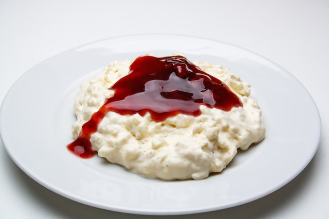

Rice pudding
Rice pudding can be topped with anything
Many people like to eat rice pudding with cinnamon, but you can top it with anything fruity. It will always taste good.
Ingredients
for 4 servings
- 200 to 250g Round rice
- 1L Milk
- 1 Ts Butter
Steps
- Saute the rice in butter
- Add milk
- Cook for half an hour (stir every 10 Minutes)